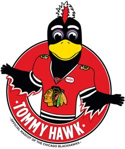

The official mascot of the Chicago Blackhawks, Tommy Hawk is the NHL's best. This feathery fowl loves to dance, play hockey and generally cause mascot mayhem wherever he goes. Tommy is not only at all Blackhawks home games, but Tommy makes numerous appearances throughout the Chicagoland area and the country. Tommy loves to attend all types of events from birthday parties, block parties, schools, parades, business expos to pretty much anywhere that laughter and fun are needed.
Tommy Hawk Appearances
Appearances
Tommy Hawk is available for booking at public and private events throughout the year! Whether you're planning a birthday party, grand opening or special event, Tommy is guaranteed to supply your guests with loads of laughable memories.
Submit requestIn-Arena Appearances
Tommy Hawk is available to visit you and your loved ones during the game and you won't even have to move a muscle. This is a great opportunity to surprise a loved one for their birthday or anniversary.
Submit request
School Appearances
You can have Tommy come for an all school assembly or have him visit each individual class. General school visits are a sure way to spice up the school day, field day, reading night or just for fun.
More info